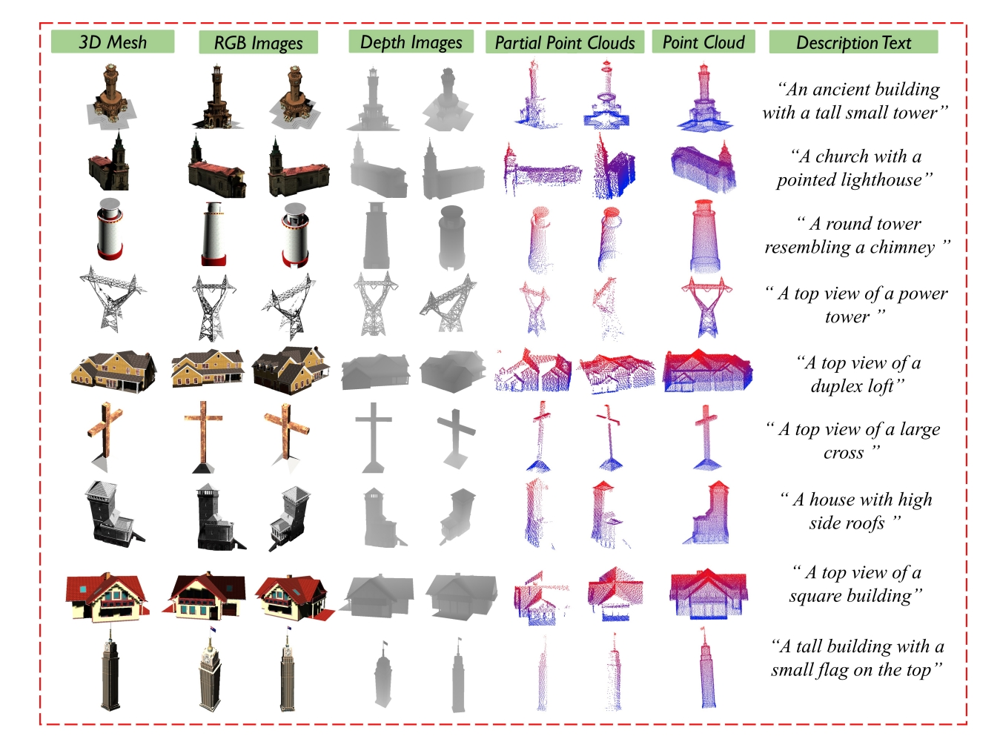

About me
I am currently pursuing an MPhil at Sun Yat-sen University, supervised by Prof. Boyu Zhou and Prof. Juepeng Zheng. I received my B.Eng. from Xidian University in 2024.
Since January 2023, I have concurrently served as a visiting researcher at STAR Group supervised by Boyu Zhou. I am a research intern at IDEA Research since April 2025, mentored by Zhouchi Lin, focusing on UAV VLN. In my undergraduate study, I was the Algorithm Team Leader of IRobot, Xidian University Robomaster Team.
My research focuses on Generative Models for Robotics, VLN, and 3D Active Reconstruction.
I am actively seeking industrial internships and PhD opportunities.
📝 Publications
(* stands for equal contribution, † stands for corresponding authors)

Chen Feng*, Guiyong Zheng*, Tengkai Zhuang, Yongqian Wu, Haojia Li, Juepeng Zheng, Shaojie Shen, and Boyu Zhou†
Under review at The International Journal of Robotics Research (IJRR), 2026.
Paper | Video

Guiyong Zheng*, Jinqi Jiang* , Chen Feng*, Shaojie Shen, and Boyu Zhou†
arXiv, 2024.
Paper | Project Page | Dataset

Mingjie Zhang*, Chen Feng*, Zengzhi Li, Guiyong Zheng, Yiming Luo, Zhu Wang, Jinni Zhou, Shaojie Shen, and Boyu Zhou†
IEEE/RSJ International Conference on Intelligent Robots and Systems (IROS), 2024. Abu Dhabi, United Arab Emirates. (Oral)
Paper | Project Page | Code
🚀 Selected Projects

Developed a high-performance tool for real-time video segmentation based on SAM 2. Optimized inference pipeline for low-latency applications.


Differential Robotics, Engineer, 2024.03 - 2024.04
Deployed drones for 20000m³ GPS-denied mine exploration with fully onboard computation, limited visibility, and complex terrain.

IRobot Team, Algorithm Group Leader, 2020.09 - 2023.09
Developed auto-aiming and autonomous navigation systems, built Unity-based simulator, and led the algorithm team.
🏆 Selected Awards
- National Scholarship
top 1%, Ministry of Education of P.R. China, 2021, 2023 - National University Students Robotics Competition, RoboMaster
National Second Prize, DJI, 2022, 2023 - National Undergraduate Electronic Design Contest
National Second Prize, NUEDC, 2022 - Hua Meng Scholarship
top 1%, Xidian University, 2023 - Outstanding Student
top 5%, Xidian University, 2021, 2022, 2023 - Mathematical Contest In Modeling (MCM)
Meritorious Winner, COMAP, 2022
📖 Educations
- MPhil, School of Artificial Intelligence, Sun Yat-sen University
Supervisor: Prof. Juepeng Zheng; Co-advised by Prof. Boyu Zhou
2024.09 - Present - B.Eng, School of Electronic Engineering, Xidian University
Supervisor: Prof. Kun Wei | Rank: 1/113, CGPA: 3.9/4.0
2020.09 - 2024.07
💻 Experience
- IDEA Research (International Digital Economy Academy)
Research Intern; Mentor: Zhouchi Lin; Focus on UAV VLN
2025.04 - Present - STARLab, Southern University of Science and Technology
Research Assistant; Advised by Prof. Boyu Zhou
2023.07 - Present - IRobot, Xidian University Robomaster Team
Algorithm Team Leader
2020.10 - 2023.07